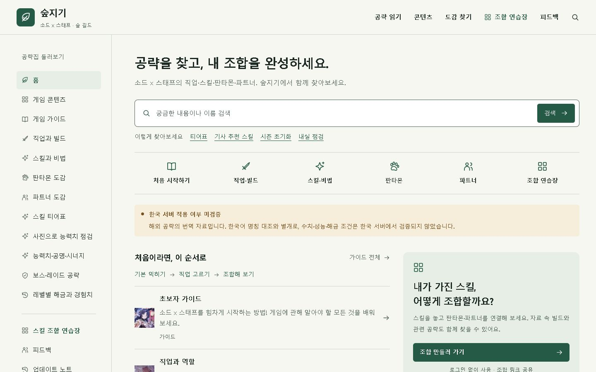

숲지기
찾은 정보가 나의 조합이 되기까지.
흩어진 게임 공략을 검색하고, 비교하고, 내 조합에 연결하는 탐색 경험.
목차용어보다, 궁금한 내용에서 출발하기열기닫기

용어보다, 궁금한 내용에서 출발하기
홈에 검색과 초보자 시작 경로를 함께 배치했습니다. 정확한 항목 이름을 모르는 상황을 고려해 한국어·영어·관련어를 검색에 연결하고, 질문에서 공략과 도구로 이동하는 경로를 마련했습니다.
검색의 다음 행동까지 보이도록
“기사 추천 스킬”처럼 목적이 담긴 질문에서 티어표와 빌드로 이어지도록 입구를 확장했습니다. 새 답변을 생성하기보다 기존 자료에 도달하도록 연결하는 방향을 택했습니다. 아래 변경 전은 당시 운영 화면, 변경 후는 당시 로컬 검증 화면입니다.
작은 화면에서는 드래그 대신 선택으로
모바일에서는 슬롯을 눌러 선택창을 열고, 검색과 효과 요약으로 항목을 고르는 경로를 제공합니다. 데스크톱의 조합 편집과 모바일의 터치 편집을 각 화면에 맞게 구성하고, URL 공유·복원으로 같은 조합을 함께 볼 수 있게 했습니다.
Sword × Staff 비공식 한국어 게임 위키. 공략을 읽는 것에서 끝나지 않고, 필요한 정보를 찾아 자신의 스킬 조합으로 이어지도록 구성한 프로젝트입니다.
시작한 문제
이름을 정확히 알지 못해도 정보를 찾고, 긴 공략을 읽는 중에도 스킬 효과를 확인하며, 휴대폰에서 조합을 수정해야 합니다.
선택한 방향
읽기 → 찾기 → 비교 → 조합으로 연결되는 경로를 만들고, 이용자의 질문과 현재 작업 맥락을 탐색의 기준으로 삼았습니다.
정보를 찾는 순간부터 조합을 공유하는 순간까지
제공 화면과 문서에서 재구성한 과업 흐름 · 사용자 조사 결과가 아닙니다.
- 질문 검색
- 티어표·빌드 비교
- 스킬 효과 확인
- 내 조합 편집
- 링크로 공유
- 진입점
- 자료의 원래 순서보다 이용자의 목적을 우선
처음 읽기·질문 검색·직업별 비교를 각각의 시작점으로 구성했습니다.
- 읽는 맥락
- 짧은 확인은 상세창, 긴 설명은 문서로
공략을 떠나지 않고 효과를 확인하되 전체 설명과 직접 공유 경로는 유지했습니다.
- 모바일 편집
- 슬롯에서 선택창으로 이어지는 터치 경로
드래그에 의존하지 않고 검색·필터·효과 요약으로 항목을 고르게 했습니다.
설계할 때 먼저 생각한 것
정확한 이름을 몰라도 찾을 수 있을까?
검색하는 사람은 문서의 분류보다 지금 궁금한 내용을 먼저 떠올린다고 생각했습니다. 질문과 관련어를 기존 공략으로 연결하고, 찾은 정보를 바로 조합에 적용하는 흐름을 검토했습니다.
검색이 답을 만들어내는 것처럼 보이지 않도록, 연결된 문서와 평가의 출처를 함께 보여주는 쪽을 택했습니다.
읽던 공략을 떠나지 않고 효과 확인하기
짧은 스킬 확인 때문에 전체 페이지를 오가는 대신, 공통 상세창에서 효과와 확보된 평가를 확인하도록 구성했습니다. 긴 설명과 고유 주소는 별도로 유지해 짧은 비교와 깊은 읽기를 나눴습니다.
정보량보다 긴 공략의 읽기를 우선하기
모바일 본문을 15px에서 17px로 조정하고 행간과 보조 정보의 대비를 정리했습니다. 같은 공략 구간의 자료로 문자 크기와 밀도 차이를 살펴볼 수 있습니다.
평가의 조건도 정보의 일부로
티어표에 해외 평가 기준과 미평가 상태를 표시하고, 문서에는 원문·수정일·관련 근거를 연결했습니다. 한국 서버 적용이 확인되지 않은 정보는 이용자가 판단할 수 있도록 화면에 드러냈습니다.
첫 표시를 가볍게, 탐색 범위는 그대로
전체 검색·필터는 유지하면서 초기 목록을 줄이고, 필터와 표시 개수를 복원하도록 구성했습니다. 아래는 2026년 11월 13일 운영 환경의 Lighthouse 기록입니다.
| 모바일 화면 | LCP 전 → 후 | TBT 전 → 후 | CLS 전 → 후 |
|---|---|---|---|
| 홈 | 1.91 → 1.09초 | 49 → 85ms | 0 → 0 |
| 도감 | 2.52 → 1.39초 | 599 → 113ms | 0 → 0 |
| 공략 | 2.44 → 1.58초 | 57 → 138ms | 0 → 0 |
| 조합 | 2.73 → 1.82초 | 130 → 158ms | 0 → 0 |
| 검색 | 1.87 → 1.06초 | 330 → 272ms | 0.148 → 0 |
기준은 각 1회, 이후 홈·도감·조합·검색은 3회 중앙값, 공략은 1회입니다. 홈·공략·조합의 TBT는 증가했습니다. 이번에 재측정한 값이나 실제 사용자 과업 시간은 아닙니다.
만든 결과와 남은 질문
만든 결과
검색과 분류, 상세창, 조합 편집·저장·공유를 연결했습니다. 결과 화면은 운영 캡처로, 성능은 당시 실험실 측정 기록으로 확인할 수 있습니다.
다음에 확인할 것
질문 검색에서 적절한 공략을 찾는지, 모바일에서 슬롯 변경을 완료하는지 과업 기반 사용성 검증이 필요합니다.
검증 범위와 자료 기준
전후 이미지는 당시 운영 화면과 로컬 검증 화면의 조합입니다. 질문 검색은 규칙 기반이며 모든 질문을 이해하지 않습니다. 검색 성공률·읽기 속도·편집 완료 시간은 측정하지 않았습니다. 원문 공략·번역·게임 이미지는 별도 제작자의 자료입니다.
2026년 11월 15일 수집 자료 기준입니다. 담당 역할은 본인 설명을 반영했으며, 팀 산출물 전체를 개인 기여로 해석하지 않습니다.
화면과 문서, 근거 전체 보기
제공된 화면 31개와 관련 문서 5개입니다. 핵심 사례 외의 화면·중간안·검토 기록도 구분해 열어볼 수 있습니다.
운영 화면 전체15개
초기 시안·컴포넌트 기록16개
수집용 중복 목록·개인 기여 검토표·로컬 경로와 원시 성능 JSON은 제외했습니다. 원문 속 로컬 경로·이메일은 생략했으며, 당시 테스트 보고와 계획은 작성 시점의 기록으로 보존했습니다.